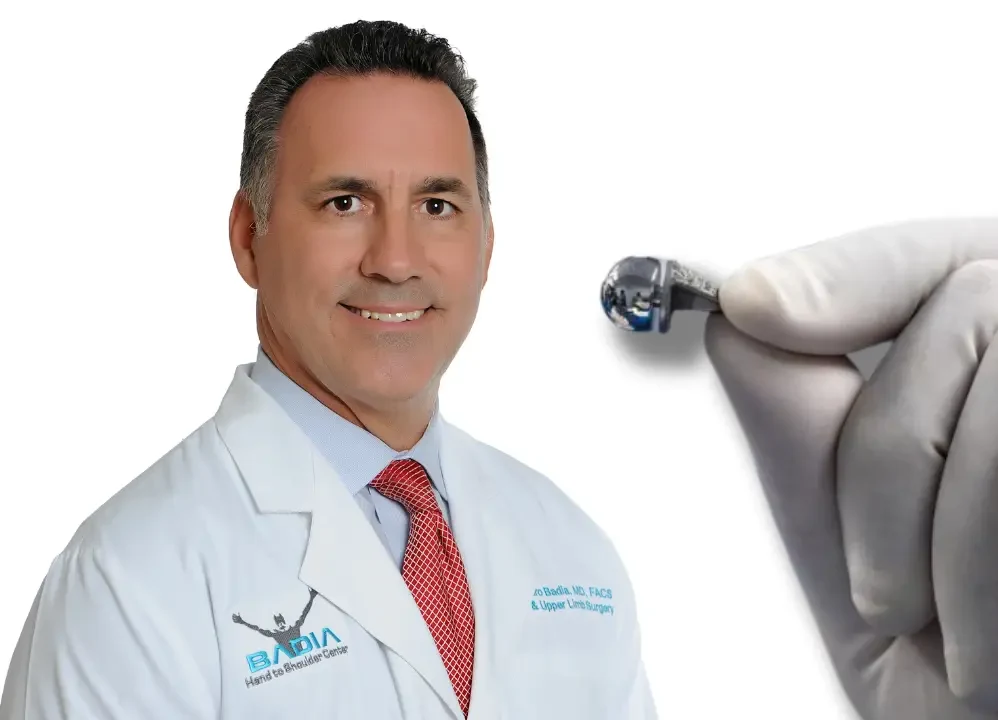
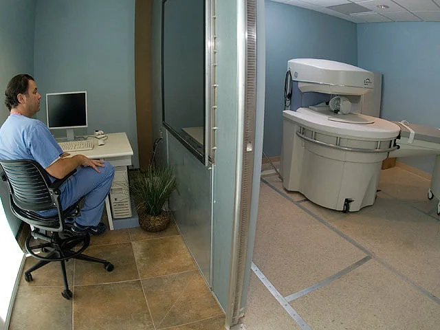
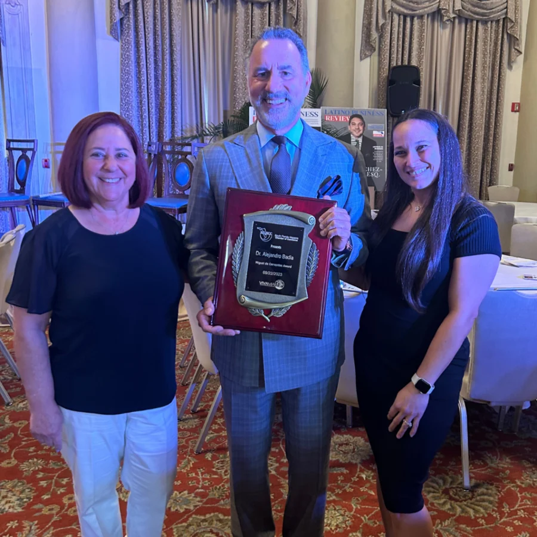
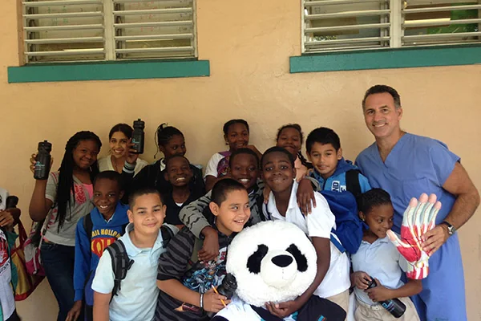

Film star, India
Ram Charan
When the actor injured his right wrist on set, Dr. Badia joined the surgical team at Ganga Hospital in Coimbatore, India.
As reported by Asianet News
I’m Alejandro Badia. Many people who come to see me have already been told something: that they need the bigger operation, that it can’t be fixed, or that they’ll have to be put to sleep for it. I want you to hear every option before you decide.

World No. 1s, Olympians, a film star and a world champion. They told their own stories on camera or in the press. Tap any photo to watch.
Film star, India
When the actor injured his right wrist on set, Dr. Badia joined the surgical team at Ganga Hospital in Coimbatore, India.
As reported by Asianet News

Former world No. 1, tennis
Marcelo RíosBoth elbows, treated with Tenex. No pain, no scars, quick recovery, in his own words.

Author, The Wolf of Wall Street
Jordan BelfortThumb joint replacement with the BioPro implant.
Tennis, India
Came to Miami for arthroscopic surgery on her right wrist, performed by Dr. Badia.
As reported in the Indian press
Two-time Olympian, swimming
Shaune FraserWon Pan American silver in the 200m freestyle shortly after his wrist surgery.
Bare-knuckle world champion
A growth-factor injection for boxer’s knuckle before his sixth title defense.
Filmed with Dr. Badia

Competitive bodybuilder
Raúl BarriosDischarged and ready to train after a biceps tendon reconstruction.

Professional tennis, Australia
Four failed proceduresThen he flew to Miami for a solution.
And thousands of patients you’ve never heard of, from 30 countries. Teachers, pilots, surgeons, parents.
Watch their storiesScroll, or pick a spot. Each one shows the common problems and how Dr. Badia treats them.


Fingers that catch, curl in or won’t straighten are usually tendons or the tissue around them. Most are fixed with small, quick procedures, often while you stay awake.
Common problems
How Dr. Badia treats it
Six hand surgeries in one day, a patient from the Dominican Republic
Pain at the base of the thumb when you turn a key or open a jar is usually arthritis of the joint that lets the thumb swing across the palm. This is where Dr. Badia does some of his most distinctive work.
Common problems
How Dr. Badia treats it
Jordan Belfort after his thumb joint replacement
Numb fingers at night, a cord pulling a finger into the palm, a broken bone that healed crooked. Most hand surgery here happens in the office or at the surgery center in the same building.
Common problems
How Dr. Badia treats it
An OB-GYN from Barbados back to work after endoscopic carpal tunnel release
A “sprain” that still hurts months later is often a ligament or cartilage tear that an X-ray can’t show. The wrist is crowded and unforgiving, and it rewards a surgeon who looks inside it.
Common problems
How Dr. Badia treats it
A professional tennis player who came after four failed procedures
Elbow pain that lingers through rest and therapy is usually a worn tendon. A torn biceps at the elbow is the opposite: it needs to be repaired quickly.
Common problems
How Dr. Badia treats it
Former world No. 1 Marcelo Ríos on his elbows
Rotator cuff tears, a shoulder that keeps dislocating, arthritis that wakes you at night. Shoulder care is shared with Dr. Joel Peterson, a shoulder and elbow specialist trained at Columbia and HSS.
Common problems
How Dr. Badia treats it
Why a patient flew from Ecuador for a Latarjet procedure
Each is something Dr. Badia has published, taught or filmed. None is right for everyone. All are worth knowing before you agree to surgery somewhere else.

The two-piece BioPro thumb implantThe usual operation takes out the trapezium, a whole bone at the base of the thumb, and fills the gap with a tendon from your forearm. Dr. Badia is one of the few American surgeons who replaces the joint instead, with an implant fitted to your anatomy.
The thumb keeps its length and its look, and patients film their follow-ups from the first week.
 WAVR: wide-awake surgery with virtual reality
WAVR: wide-awake surgery with virtual realityFor many hand and wrist procedures you don’t need general anesthesia. You eat lunch, take your usual medicines, numb only the hand, and put on a virtual reality headset while Dr. Badia works. You can talk to him during the procedure and eat again right after.
 Every image reviewed by Dr. Badia himself
Every image reviewed by Dr. Badia himselfA professional tennis player flew from Australia after four failed wrist procedures. A patient from Venezuela came after two operations that didn’t help. A patient from Georgia came because he didn’t want the operation he’d been offered.
Send your X-rays, MRI and operative reports. Dr. Badia reads them himself, then talks you through what he sees.
Dr. Badia opened the center in 2008 to bring every step of hand, wrist, elbow and shoulder care under one roof.




Step 1
The center sits on the ground floor of the Doral Pavilion, near three major highways and minutes from Miami International Airport.
3650 NW 82nd Ave, Suite 103Step 2
Your consultation is with Dr. Badia himself. The whole team is bilingual, and a coordinator handles records and scheduling for patients from abroad.
Step 3
Digital X-ray, MRI and fluoroscopy on site, plus ultrasound with augmented reality that lets Dr. Badia guide injections while watching the joint, not a monitor.
Step 4
Dr. Badia operates only at The Surgery Center at Doral, in the same building. A specialty team, a smaller setting, and fewer infection risks than a large hospital.
The Surgery Center at Doral, Suite 201Step 5
Rehabilitation is on site. Patients who fly home keep seeing Dr. Badia by video, and he can join a call with your own therapist.
Step 6
A partner hotel is directly across the street, with preferred rates at four more. The international team helps you book.
See partner hotelsDr. Badia films his patients’ follow-ups, many of them in Spanish. See all patient stories.
Seven days after his BioPro thumb replacement, a 78-year-old retired orthopedic surgeon shows his hand on camera.
He has taken the case for faster, simpler, physician-led care from his operating room to the United Nations.

United Nations, New York, September 2025
During the 80th session of the General Assembly, he argued for oversight instead of authorization, fewer middlemen, and physicians at the policy table.
His book
An insider’s account of the barriers in U.S. healthcare, from the providers’ and patients’ side. In print and audiobook.

His podcast with people who are disrupting the system, streamed live on YouTube and LinkedIn and available on Spotify and Apple Podcasts.
Real procedures from the surgery center, shared and explained.

2023

Giving back
GGoogle reviews
Based on 294 reviews
Going to see Dr. Badia turned out to be a life-changing decision. For months, I struggled with relentless shoulder pain that robbed me of sleep and joy.Google review, shoulder patient
Dr. Badia informed me of the procedure and gave me confidence. After 2 months, I have regained motion.Google review, elbow surgery patient
He’s definitely on the cutting edge of advancements, and anyone would be wise to see him.DDaniel G., Google review
I was seen almost immediately. Diagnosis made and communicated clearly along with treatment plan.Google review
Send your images from home, talk to Dr. Badia on a secure video visit, and only travel once there’s a plan. A bilingual team handles records, dates and hotels, and stays in touch with your doctor and therapist back home.

He left Cuba with his parents at six months old and grew up in Elizabeth, New Jersey. Cornell, NYU and Bellevue followed, then hand surgery training in Pittsburgh and across Europe. In Miami since 1995, he co-founded a surgical training lab where surgeons from around the world practice before they operate, and he still runs an international hand fellowship.
A coordinator will call you back to book an in-person visit in Doral, a video visit, or a New York procedure day.